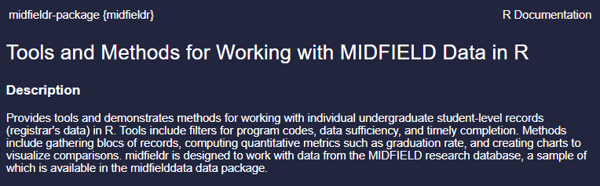

# sample code chunk
x <- 10 Before you arrive
To get the most out of the workshop, you should have the essential software installed and running on your computer several days before the workshop to give you time to contact us with questions if anything goes amiss.
If you are trying R for the first time, it is vital that you attempt to set up your computer with the necessary software in advance or it will be difficult to keep up.
As you work your way through this pre-workshop assignment, you will encounter R code chunks to type. Clicking the Copy to Clipboard icon in the top right corner of the code chunk copies the code to your clipboard, saving some typing time. For example:
Already use R?
If you are already an R and RStudio integrated development environment (IDE) user, this is a great time to check for updates.
Updating RStudio
- RStudio menu Help > Check for Updates will tell you if you are current or not.
- To update, close RStudio on your machine, download the new version from Posit).
Update your packages
How to upgrade all out-of-date packages in What They Forgot to Teach You About R by Jennifer Bryan and Jim Hester.
Updating R
The easiest way to update R is to simply download the newest version. RStudio will automatically use the latest you’ve installed.
Alternatively, Windows users can use the installr package:
- Install the installr package
- If open, close R and RStudio
- Navigate to your most recent
Rgui.exefile located in your Programs directory, e.g.,C:\Program Files\R\R-4.0.0\bin\x64\Rgui.exe
- Right-click on
Rgui.exeand run as administrator - In the R GUI window that appears, run the commands
# Windows users only
library("installr")
updateR()Updating your R library
How to transfer your library when updating R also by Bryan and Hester. Requires the fs package.
New to R?
This section is for anyone who has not yet installed R or RStudio.
The first steps are to install R and RStudio. Windows users may have to login as an Administrator before installing the software.
- Install R for your operating system
- Install RStudio, a user interface for R
Once the installation is complete, you can take a 2-minute tour of the RStudio interface.
- Let’s start (00:57–02:32) by R Ladies Sydney (Richmond, 2018)
The same video includes a longer (7 minute) tour of the four quadrants (panes) in RStudio if you are interested.
- The RStudio quadrants (07:21–14:40) by R Ladies Sydney (Richmond, 2018)
Start the setup
Once you have R and RStudio up and running on your system, we have a short set of setup instructions to help prepare you for the workshop R tutorials.
We start by creating an RStudio Project file and directory. You can recognize an R project file by its .Rproj suffix.
If you prefer your instructions with commentary,
- Start with a Project (02:34–04:50) by R Ladies Sydney (Richmond, 2018)
If you prefer basic written instructions,
- RStudio, File > New Project… > New Directory > New Project
- Or, click the New Project button in the Console ribbon,

In the dialog box that appears,
- Type the workshop name as the directory name, for example,
midfield-institute-2023
- Use the browse button to select a location on your computer to create the project folder
- Click the Create Project button
Whenever you work with the workshop materials, launch the midfield-institute-2023.Rproj file to start the session.
Add some folders
While file organization is a matter of personal preference, we ask that you use the directory structure shown here for your work in the workshop. Assuming we called our project midfield-institute-2023, the minimal directory structure has three folders in it plus the .Rproj file at the top level.
midfield-institute-2023\
data\
results\
scripts\
midfield-institute-2023.RprojWe use the folders as follows:
datadata filesresultsfinished graphs and tabulated data formatted for display
scriptsR scripts that operate on data to produce results
To create folders:
- use your usual method of creating new folders on your machine
- or you can use the New Folder button in the Files pane

For a video guide,
- Make some folders (04:50–06:08) by R Ladies Sydney (Richmond, 2018)
Install CRAN packages
The fundamental unit of shareable code in R is the package. For the R novice, an R package is like an “app” for R—a collection of functions, data, and documentation for doing work in R that is easily shared with others (Wickham, 2014).
Most packages are obtained from the CRAN website (The Comprehensive R Archive Network, 2018-04-22). To install a CRAN package using RStudio:
- Launch RStudio
The RStudio interface has several panes. We want the Files/Plots/Packages pane.
- Select the Packages tab

Next,
- Click Install on the ribbon
- In the dialog box, type the name of the package. For our first package, type
data.tableto install the data.table package (Dowle & Srinivasan, 2021) - Check the Install dependencies box
- Click the Install button
During the installation, Windows users might get a warning message about Rtools, something like:
WARNING: Rtools is required to build R packages but is not currentlyinstalled. Please download etc.
Rtools is needed for packages with C/C++/FORTRAN code from source—which does not apply to us. You may ignore the warning and carry on.
In the RStudio Console, you should see a message like this one,
package 'data.table' successfully unpacked and MD5 sums checkedIf successful, the package will appear in the Packages pane, e.g.,

Repeat the process for the following packages:
checkmate
ggplot2
wrapr
curlAlternatively, you can install them all at once by typing in the Console:
packages_we_use <- c("data.table", "ggplot2", "checkmate", "wrapr", "curl")
install.packages(packages_we_use)Install midfieldr
midfieldr is not yet available from CRAN. The development version for the Institute is midfieldr 1.0.0.9030. To install from thedrat repository, type in the Console:
# type in the RStudio Console
install.packages("midfieldr",
repos = "https://MIDFIELDR.github.io/drat/",
type = "source")
Tip
If you get an error message like the one below, it means that the packages in the dependencies list have not been installed.

The remedy is to install any packages listed in the error message and then install midfieldr again.
Once midfieldr is successfully installed, you can confirm the installation by running the following lines to bring up the package help page in the Help window.
# type in the RStudio Console
library("midfieldr")
? "midfieldr-package"
# or, equivalently
help("midfieldr-package")If the installation is successful, the code chunk above should produce a view of the help page as shown here.

Install midfielddata
Because of its size, the data package is stored in a drat repository instead of CRAN. Installation takes time; please be patient and wait for the Console prompt “>” to reappear.
Type (or copy and paste) the following lines in the RStudio Console.
# type in the RStudio Console
install.packages("midfielddata",
repos = "https://MIDFIELDR.github.io/drat/",
type = "source")
# be patientOnce the Console prompt “>” reappears, you can confirm a successful installation by viewing the package help page. In the Console, run:
# type in the RStudio Console
library("midfielddata")
help("midfielddata-package")If the installation is successful, the code chunk above should produce a view of the help page as shown here.
Finish the setup
As a final task, save your open files and close RStudio.
If you get a prompt about saving your workspace image, the answer is No.
You can turn this prompt off by reopening RStudio and use the pulldown menu:
- Tools > Global Options…
- In the dialog box, Save workspace to .RData on exit: Select “Never”
Homework
If you are new to R (or new to the ggplot2 or data.table packages), we recommend you complete the three introductory tutorials listed below. Completing these tutorials before attending the Institute will make your time with us that much more productive.
On Tuesday, July 11—the day before the Institute—we plan to hold online office hours to answer your questions about MIDFIELD and help resolve any problems you might be having using R or midfieldr.
See the Agenda for more information, including links for downloading handouts to be used in some of the sessions.
References
Dowle, M., & Srinivasan, A. (2021). Data.table: Extension of ‘data.frame‘. https://CRAN.R-project.org/package=data.table
Richmond, J. (2018). Basic Basics Lesson 1: An opinionated tour of RStudio. https://youtu.be/kfcX5DEMAp4
The Comprehensive R Archive Network. (2018-04-22). [Computer software]. https://cran.r-project.org/
Wickham, H. (2014). Advanced R. Taylor & Francis.